Di sudut bumi Kabupaten Sambas yang penuh berkah, terhampar sebuah dusun yang tenang, asri, dan ramah tamah. Dikelilingi hamparan sawah yang membentang luas, disapa lembut angin yang membawa aroma tanah basah, serta dihuni oleh keluarga-keluarga yang hidup rukun dan saling menyayangi. Inilah Sepinggan Gelik — tempat di mana kesederhanaan menjadi keindahan, dan kebersamaan menjadi kekuatan yang tak tergantikan.
🌿 Mulai Menjelajah 📍 Temukan KamiAlamat Lengkap:
Dusun Sepinggan Gelik, Desa Sepinggan, Kecamatan Semparuk, Kabupaten Sambas, Provinsi Kalimantan Barat, Indonesia — Kode Pos 79453
Terletak di jalur yang mudah dijangkau, namun tetap menjaga suasana pedesaan yang tenang dan damai — jauh dari kebisingan kota, namun dekat dengan kehangatan sesama warga. Wilayah ini dikelilingi oleh hamparan sawah yang luas, aliran sungai yang jernih, serta pepohonan yang rindang meneduhkan setiap jengkal tanahnya. Udara pagi yang sejuk, pemandangan hijau yang menenangkan mata, serta langit yang bersih dari polusi — adalah anugerah yang kami nikmati setiap hari di sini.
Warga Sepinggan Gelik adalah masyarakat yang sederhana, jujur, dan pekerja keras. Sebagian besar bermata pencaharian sebagai petani yang mencintai tanahnya, sebagian lagi berkebun, beternak, atau berdagang kecil-kecilan. Meski kehidupan sederhana, hati kami kaya dengan rasa syukur dan kebersamaan.
Nilai-nilai kekeluargaan masih sangat terjaga di sini. Tetangga bukan sekadar orang yang tinggal berdampingan, melainkan saudara yang saling peduli saat susah maupun senang. Jika ada yang membangun rumah, warga datang membantu tanpa diminta; jika ada yang tertimpa musibah, semua berdatangan untuk mendoakan dan memberi dukungan — itulah budaya kami yang dijaga dari leluhur.
"Kami mungkin tidak hidup mewah seperti di kota besar, tapi kami hidup kaya dengan kebersamaan, sehat dengan alam yang terjaga, dan bahagia dengan kesederhanaan yang kami miliki." — Ungkapan hati warga Sepinggan Gelik
Nama "Sepinggan Gelik" bukanlah nama yang diberikan begitu saja, melainkan memiliki cerita dan makna yang diwariskan dari generasi ke generasi leluhur kami. Nama ini diambil dari ciri khas alam setempat — adanya pohon dan kondisi wilayah yang menjadi ciri pembeda yang melekat sejak lama di hati masyarakat.
Sejak puluhan tahun silam, nenek moyang kami memilih menetap di tanah ini karena tanahnya yang subur, airnya yang melimpah, serta lokasinya yang strategis namun tetap aman dan damai. Dari sekian rumah yang berdiri berderet, tumbuhlah pemukiman yang makin lama makin berkembang menjadi dusun yang kita kenal sekarang.
Para pendatang awal yang membuka hutan menjadi ladang dan sawah adalah orang-orang yang tekun dan berjiwa besar. Mereka membabat hutan, membuka jalan, membangun rumah, dan menanam harapan demi masa depan anak cucu mereka. Semangat kerja keras dan kebersamaan inilah yang menjadi fondasi kokoh dusun kami hingga hari ini — semangat yang tak boleh pudar dimakan zaman.
Dari yang tadinya hutan belantara, kini tumbuh sawah-sawah menghijau, rumah-rumah berdiri rapi, masjid menjadi penanda arah kehidupan, dan sekolah menjadi jendela masa depan generasi muda. Semua ini bukan datang dengan sendirinya, melainkan hasil tetesan keringat dan doa tulus para pendahulu kami yang kami hormati dan kami syukuri setiap hari.
Tanah kami kaya, air kami jernih, dan alam kami menyediakan segala yang dibutuhkan untuk hidup layak. Inilah kekayaan yang Tuhan titipkan kepada kami untuk dijaga dan dikelola dengan penuh rasa syukur dan tanggung jawab.
Sawah yang membentang luas di sekeliling dusun adalah sumber kehidupan utama masyarakat kami. Musim tanam menjadi momen kebersamaan, di mana petani saling membantu mengolah tanah, menanam padi, hingga saat panen tiba yang selalu disambut sukacita.
Air yang cukup dan tanah yang subur membuat padi tumbuh dengan baik setiap tahunnya. Hasil panen tidak hanya untuk makan keluarga, tapi juga dijual ke pasar untuk memenuhi kebutuhan lain. Setiap butir beras yang kita makan adalah hasil kerja keras, kesabaran, dan doa para petani — pantaslah kita menghormati setiap butirnya.
Selain padi, warga juga banyak mengembangkan kebun jeruk, semangka, kelapa, dan tanaman buah lainnya di lahan pekarangan maupun ladang yang agak jauh dari pemukiman. Buah-buahan ini tidak hanya menyegarkan keluarga di rumah, tetapi juga menjadi sumber penghasilan tambahan yang lumayan saat musim panen tiba.
Anak-anak kecil pun belajar mengenal alam dari kebun-kebun ini — mereka tahu dari mana buah itu berasal, bagaimana tanaman tumbuh dari biji hingga berbuah lebat, dan betapa pentingnya merawat alam dengan kasih sayang agar memberi hasil yang baik bagi kita semua.
Selain padi dan buah-buahan, belakangan ini warga juga semakin giat mengembangkan budidaya sayuran seperti terong putih, mentimun, serta tanaman jagung di lahan-lahan ladang yang tersedia. Komoditas ini menjadi pilihan yang tepat karena masa tanamnya yang relatif singkat dan permintaan pasar yang terus meningkat.
Dengan semangat belajar dan saling berbagi pengalaman antarwarga, kebun-kebun sayur ini mulai tumbuh subur dan memberikan hasil yang memuaskan. Hal ini membuktikan bahwa tanah kami sangat subur dan berpotensi untuk dikembangkan menjadi beragam jenis tanaman, tidak hanya bergantung pada satu jenis komoditas saja.
Perkebunan kelapa sawit juga menjadi salah satu penopang ekonomi keluarga warga di Sepinggan Gelik. Pohon-pohon sawit yang tumbuh rapi dan rimbun memberikan harapan penghasilan yang stabil dalam jangka waktu yang panjang. Banyak keluarga yang memanfaatkan hasilnya untuk pendidikan anak-anak, pembangunan rumah, dan tabungan masa depan.
Kami juga selalu berupaya menjaga keseimbangan lingkungan di sekitar area perkebunan, agar kemajuan ekonomi tidak mengorbankan kelestarian alam tempat kami tinggal dan mencari nafkah bersama.
Saluran air dan sungai yang membelah wilayah dusun kami bukan sekadar air mengalir, melainkan urat nadi kehidupan sehari-hari. Mulai dari irigasi pertanian, keperluan rumah tangga, hingga tempat bermain anak-anak — air selalu menjadi bagian tak terpisahkan dari cerita hidup warga kami.
Karena itulah menjaga kebersihan air dan lingkungan di sekitarnya menjadi kesepakatan bersama yang selalu ditegaskan. Mari kita jaga agar air tetap jernih mengalir, dan manfaatnya tetap bisa dinikmati anak cucu kelak.
Di Sepinggan Gelik, kami percaya bahwa pendidikan adalah jembatan menuju masa depan yang lebih baik. Itulah sebabnya keberadaan SD Negeri 07, TK Satu Atap, serta Posyandu Durian menjadi kebanggaan sekaligus perhatian khusus bagi seluruh warga. Setiap anak berhak menuntut ilmu dan setiap keluarga berhak mendapatkan pelayanan kesehatan yang layak.
Jalan yang terus diperbaiki, masjid yang menjadi pusat ibadah dan kegiatan sosial, kantor dusun yang melayani warga dengan tulus, pos satkamling yang menjaga keamanan bersama, serta jaringan listrik yang makin merata — semua ini bukti bahwa kami terus berusaha melangkah maju, selangkah demi selangkah, bersama-sama menuju kehidupan yang lebih baik lagi.
Kekayaan alam memang penting, tapi kekayaan sesungguhnya adalah hubungan antarwarga yang penuh kasih sayang dan gotong royong. Inilah kegiatan yang membuat dusun kami terasa seperti satu keluarga besar.
"Berat sama dipikul, ringan sama dijinjing" — pepatah ini benar-benar hidup di tengah masyarakat kami. Secara berkala, warga berkumpul tanpa diminta untuk membersihkan jalan, merapikan tepian sungai dan saluran air, memperbaiki saluran irigasi, atau membantu tetangga yang membangun rumah.
Tidak ada upah yang diharapkan, yang ada cuma rasa senang bisa saling membantu. Di tengah hiruk-pikuk dunia yang makin individualis, kami ingin tetap menjaga budaya ini — karena kami sadar, hidup akan terasa jauh lebih ringan kalau kita berjalan bersama-sama, bukan sendirian.
Keamanan dan ketertiban lingkungan bukan hanya tugas aparat keamanan semata, melainkan tanggung jawab seluruh warga. Melalui Pos Satkamling Bersatu Desa Sepinggan, warga secara bergilir menjaga keamanan lingkungan, bekerja sama dengan pihak berwenang agar suasana dusun tetap aman, damai, dan kondusif setiap saat.
Semangat saling menjaga ini membuat setiap warga merasa tenang dan terlindungi — anak-anak bisa bermain dengan leluasa, warga bisa beristirahat dengan tenang di rumahnya masing-masing. Itulah buah kebersamaan dan kepedulian sesama warga yang hidup berdampingan dalam harmoni.
Posyandu Durian menjadi pusat pelayanan kesehatan dasar yang sangat berarti bagi warga, terutama bagi ibu-ibu dan balita. Di sini dilakukan penimbangan, imunisasi, penyuluhan kesehatan, dan berbagai kegiatan kelompok bina keluarga balita yang mendampingi orang tua dalam tumbuh kembang anak-anak sejak usia dini.
Kader kesehatan yang bekerja dengan penuh dedikasi dan sukarela menjadi garda terdepan dalam menjaga kesehatan keluarga-keluarga di dusun kami. Semoga ke depannya pelayanan kesehatan semakin baik dan fasilitas semakin lengkap, agar setiap warga bisa hidup sehat dan kuat membangun keluarga yang bahagia dan sejahtera.
Masjid Mujahadah bukan sekadar tempat sujud semata, melainkan jantung kehidupan masyarakat kami. Di sini kami berkumpul untuk shalat berjamaah, belajar mengaji, mengikuti pengajian rutin ibu-ibu dan bapak-bapak, serta merayakan hari besar keagamaan dengan penuh kekeluargaan.
Nilai-nilai agama menjadi kompas arah kehidupan kami — jujur dalam bekerja, baik kepada sesama, sayang kepada anak yatim, hormat kepada orang tua, dan peduli kepada tetangga. Semoga kebaikan ini senantiasa menjadi amal yang mengalir bagi seluruh warga dusun kami.
Hari-hari besar nasional maupun keagamaan selalu dirayakan dengan penuh sukacita dan kebersamaan. Anak-anak berbaris dengan ceria, bendera berkibar di depan rumah, dan lapangan menjadi tempat berkumpulnya warga dari muda hingga yang sudah lanjut usia.
Lomba-lomba sederhana seperti makan kerupuk, balon, tarik tambang, dan bola voli selalu disambut antusiasme yang luar biasa. Tawa terdengar riuh, sorak-sorai terdengar meriah — bukan untuk siapa yang menang atau kalah, tapi untuk kebersamaan yang tercipta di antara kita semua. Di momen inilah terlihat betapa indahnya hidup kalau kita saling bahagia bersama.
Setiap foto yang tersimpan di sini bukan sekadar gambar biasa — ia adalah cerita yang terhening dalam bingkai, momen yang pernah terjadi, dan kenangan yang patut dijaga untuk diceritakan kembali kepada generasi mendatang. Mari simak kisah di balik setiap foto kami:
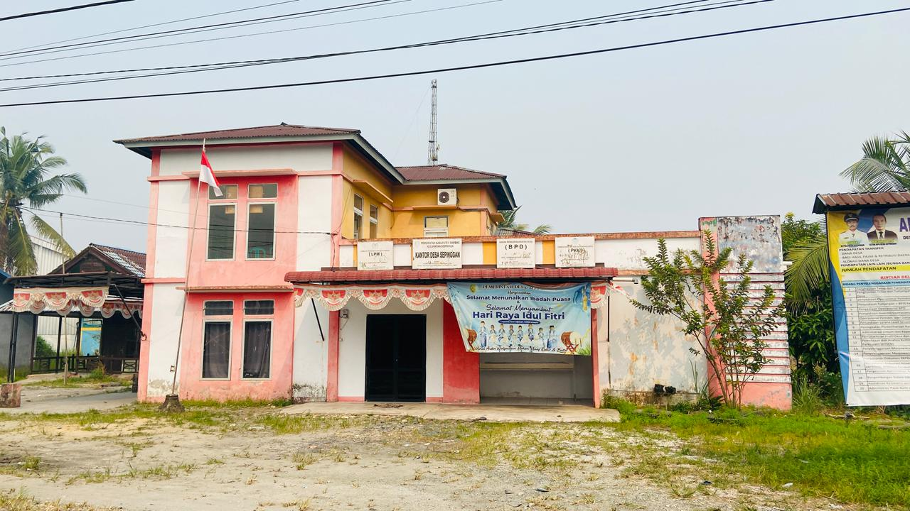
🏢 Kantor Dusun — Pusat Pelayanan Warga
Di sinilah segala urusan administrasi warga dikelola dengan sebaik-baiknya. Mulai dari surat-menyurat, perencanaan kegiatan dusun, hingga menerima saran dan aspirasi dari masyarakat. Kantor ini bukan sekadar bangunan berdinding tembok, melainkan rumah kedua tempat warga merasa didengar dan dilayani dengan tulus hati. Pengurus dusun bekerja sekuat tenaga agar pelayanan berjalan lancar, transparan, dan bermanfaat bagi setiap keluarga yang tinggal di wilayah Sepinggan Gelik.
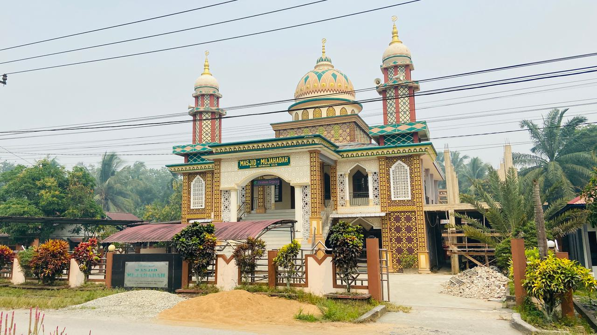
🕌 Masjid Mujahadah — Cahaya Penyejuk Jiwa
Menara masjid yang menjulang menjadi penanda arah kehidupan spiritual warga kami. Di sini hati-hati yang lelah beristirahat dengan beribadah, di sini anak-anak belajar membaca kitab suci dan memahami ajaran agama, di sini juga warga berkumpul untuk berdiskusi memecahkan masalah bersama. Masjid ini berdiri kokoh bukan hanya karena fondasi bangunannya, melainkan karena kekuatan iman dan persaudaraan yang menyatukan seluruh warga dusun di dalamnya.
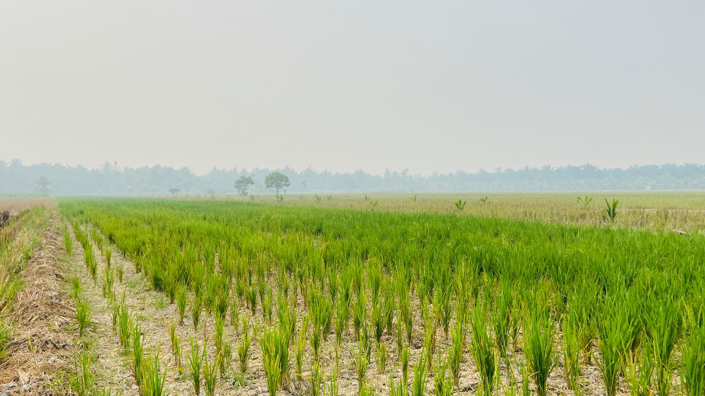
🌾 Hamparan Sawah — Hadiah Terindah dari Alam
Jika Anda datang berkunjung ke Sepinggan Gelik, pemandangan pertama yang menyapa mata adalah hamparan sawah yang hijau membentang luas sejauh mata memandang. Di pagi hari embun masih menempel di daun padi, memantulkan cahaya matahari yang baru terbit seperti permata yang bertaburan. Udara yang sejuk dan pemandangan yang menenangkan ini adalah harta karun yang tak ternilai harganya bagi kami — bukti kasih sayang Tuhan yang selalu menyuburkan tanah tempat kami berpijak setiap hari.
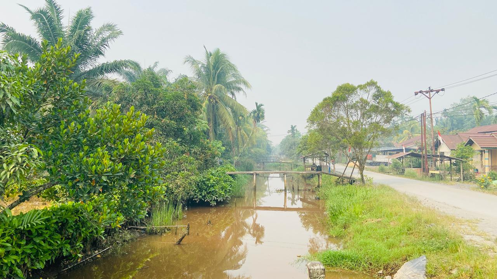
🌊 Saluran Air & Jalan Menuju Kehidupan yang Lebih Baik
Inilah pemandangan khas yang menyambut siapa pun yang melintas di wilayah Dusun Sepinggan Gelik — di sisi jalan terdapat saluran air yang jernih mengalir tenang membelah pemukiman warga. Di sepanjang aliran air ini tumbuh pepohonan rindang seperti pohon kelapa, sawit, dan tanaman buah-buahan lainnya yang menciptakan suasana sejuk dan asri sepanjang hari. Jalan yang berada di sisi kanan menjadi urat nadi perhubungan warga, tempat anak-anak berangkat sekolah, petani membawa hasil panen ke pasar, dan tetangga saling berkunjung mempererat silaturahmi. Jembatan-jembatan kecil sederhana yang melintas di atas saluran air ini menjadi saksi bisu kehidupan warga yang sederhana namun penuh kehangatan dan gotong royong setiap harinya.
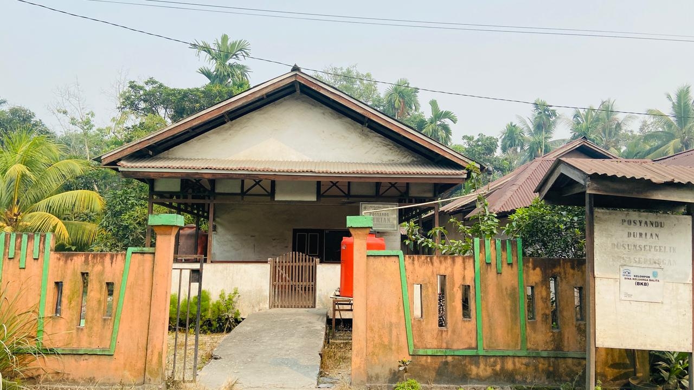
🏥 Posyandu Durian — Pusat Pelayanan Kesehatan Warga
Bangunan ini adalah Posyandu Durian yang menjadi pusat pelayanan kesehatan dasar bagi seluruh warga Dusun Sepinggan Gelik dan sekitarnya. Di sini para ibu membawa balita untuk ditimbang, mendapatkan penyuluhan kesehatan, imunisasi, serta pelayanan kesehatan ibu dan anak secara berkala. Papan nama yang tertera di dinding menunjukkan keberadaan Kelompok Bina Keluarga Balita (BKB) yang aktif mendampingi para orang tua dalam tumbuh kembang anak-anak sejak usia dini. Keberadaan posyandu ini sangat berarti bagi warga karena memudahkan akses pelayanan kesehatan tanpa harus jauh-jauh ke puskesmas.
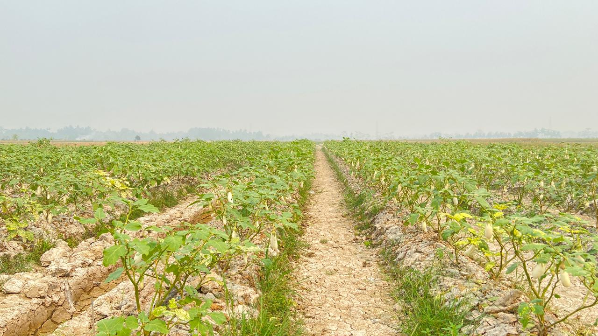
🍆 Kebun Terong Putih — Potensi Sayuran yang Menjanjikan
Lihatlah hamparan kebun terong putih yang tumbuh rapi dan subur di lahan pertanian warga. Tanaman terong putih ini adalah salah satu komoditas sayuran unggulan yang dikembangkan oleh petani di Sepinggan Gelik selain padi dan buah-buahan. Dengan perawatan yang telaten mulai dari pengolahan tanah, penanaman bibit, hingga pemupukan dan pengendalian hama secara hati-hati, tanaman ini tumbuh sehat dan berbuah lebat.
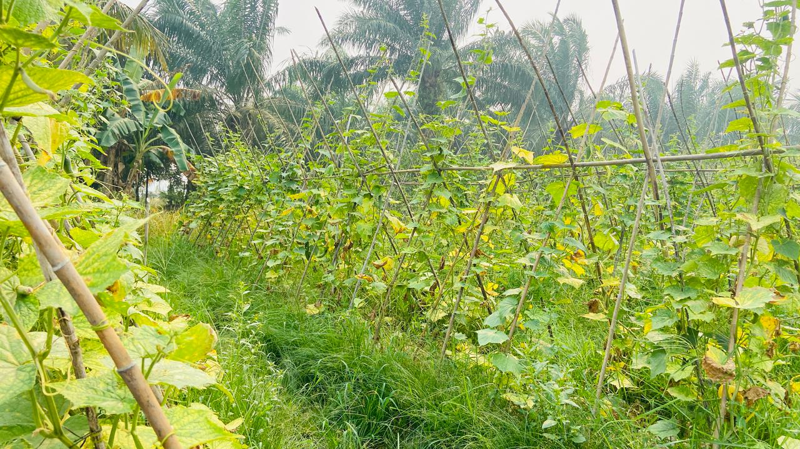
🥒 Kebun Mentimun — Segarnya Hasil Tangan Sendiri
Di lahan ladang warga ini tumbuh subur tanaman mentimun yang merambat rapi pada penyangga dari bambu. Metode budidaya dengan penyangga ini dilakukan agar buah mentimun bersih dari tanah, tumbuh lurus dan rapi, serta memudahkan perawatan dan saat panen tiba. Mentimun yang segar dan renyah ini sangat digemari masyarakat, baik untuk dikonsumsi sendiri maupun dijual ke pasar.
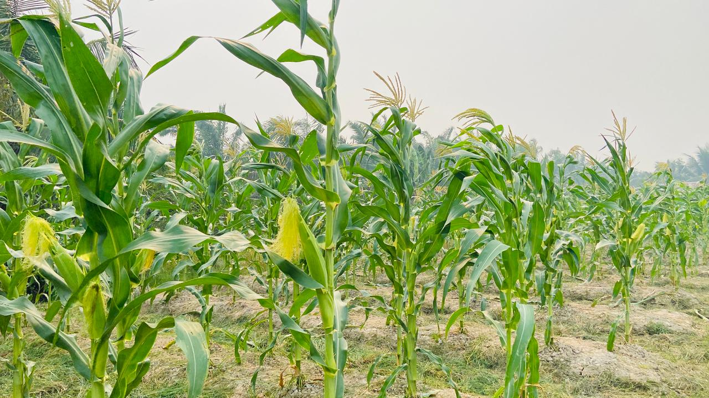
🌽 Kebun Jagung — Sumber Pangan & Rezeki yang Melimpah
Barisan tanaman jagung yang tinggi dan rimbun ini adalah pemandangan yang membanggakan di ladang warga Sepinggan Gelik. Jagung merupakan salah satu tanaman palawija yang banyak dibudidayakan oleh petani kami karena masa tanamnya yang relatif singkat dan bisa ditanam di sela-sela musim padi. Hasil panen jagung ini bisa dijual sebagai bahan pangan maupun pakan ternak.
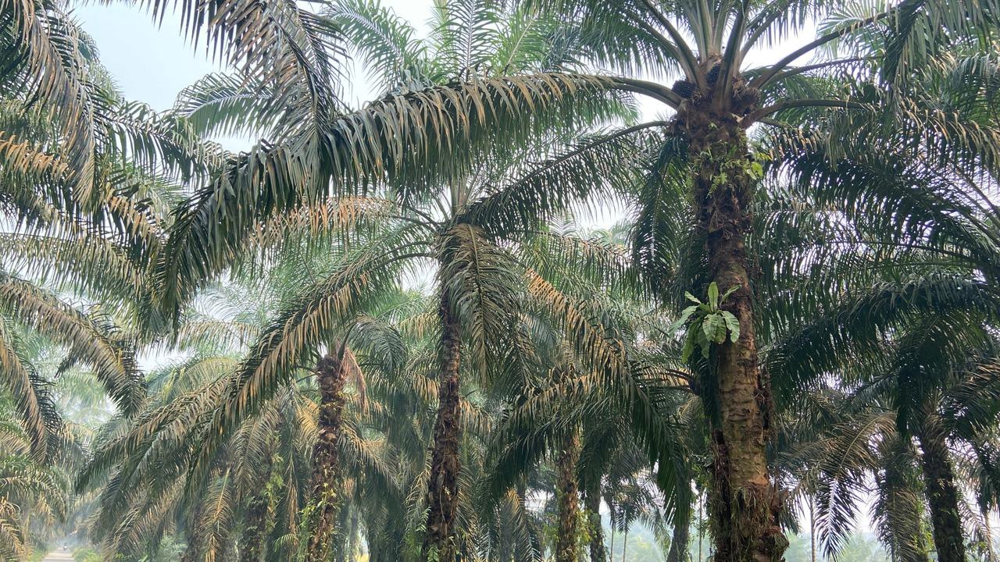
🌴 Perkebunan Kelapa Sawit — Sumber Penghasilan Jangka Panjang
Barisan pohon kelapa sawit yang menjulang tinggi dan rimbun ini merupakan salah satu potensi perkebunan yang dikembangkan oleh warga Dusun Sepinggan Gelik. Kelapa sawit menjadi komoditas yang sangat penting bagi perekonomian warga karena masa produksinya yang panjang dan permintaan pasar yang selalu ada. Banyak keluarga memanfaatkan hasilnya untuk pendidikan anak dan pembangunan rumah.
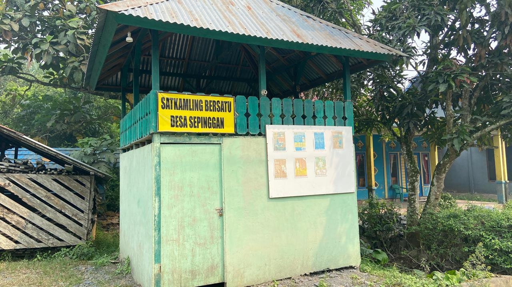
🛡️ Pos Satkamling Bersatu — Menjaga Keamanan & Ketertiban Bersama
Bangunan Pos Satkamling Bersatu Desa Sepinggan ini adalah bukti kesadaran warga akan pentingnya menjaga keamanan, ketertiban, dan kerukunan di lingkungan tempat tinggal kita bersama. Pos ini dijaga secara bergilir oleh warga yang menjadi anggota Satuan Perlindungan Masyarakat, bekerja sama dengan aparat keamanan setempat agar setiap warga bisa tidur dengan tenang dan aman.
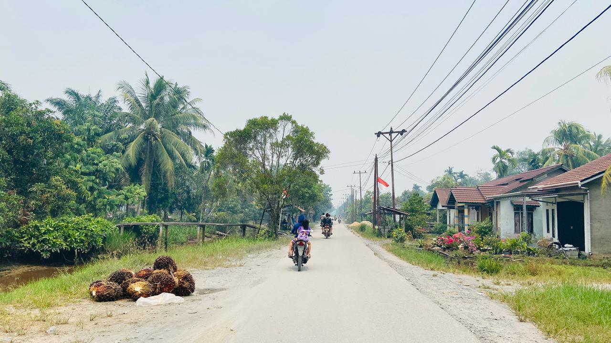
🛣️ Jalan Dusun — Langkah Menuju Kemajuan
Jalan ini adalah urat nadi pergerakan warga sehari-hari. Lewat jalan inilah anak-anak berangkat menuntut ilmu, petani membawa hasil panen ke pasar, dan tetangga saling berkunjung mempererat silaturahmi. Perawatan jalan selalu menjadi prioritas bersama — dikerjakan secara gotong royong agar tetap mulus dan aman dilalui.
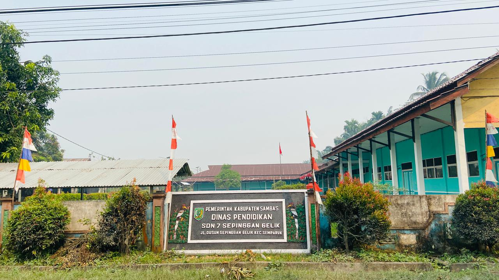
🏫 SD Negeri 07 — Jendela Dunia Anak-anak Dusun
Sekolah ini adalah kebanggaan sekaligus harapan besar bagi seluruh warga Sepinggan Gelik. Di sini anak-anak mulai belajar membaca dunia, menulis impian, dan menghitung langkah menuju masa depan. Semoga setiap anak yang melangkahkan kaki ke sini tumbuh menjadi orang-orang yang sukses dan tidak melupakan kampung halaman tercinta.
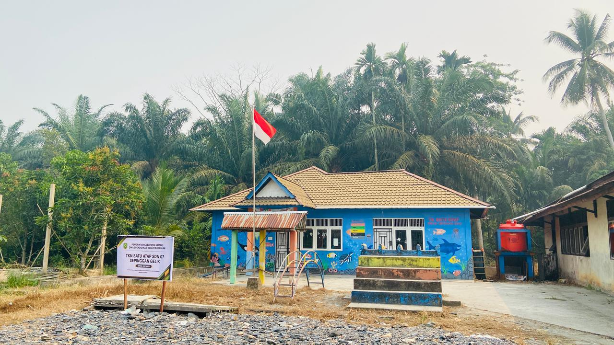
🎒 TK Satu Atap — Langkah Kecil Menuju Masa Depan
Sebelum masuk ke sekolah dasar, anak-anak kecil kami sudah mulai belajar berinteraksi dan mengenal lingkungan di tempat ini. Dengan penuh kasih sayang para guru membimbing mereka bermain sambil belajar. Senyum tawa anak-anak yang datang ke sekolah ini adalah pemandangan paling indah bagi warga dusun — karena di mata mereka, kami melihat harapan masa depan yang cerah.
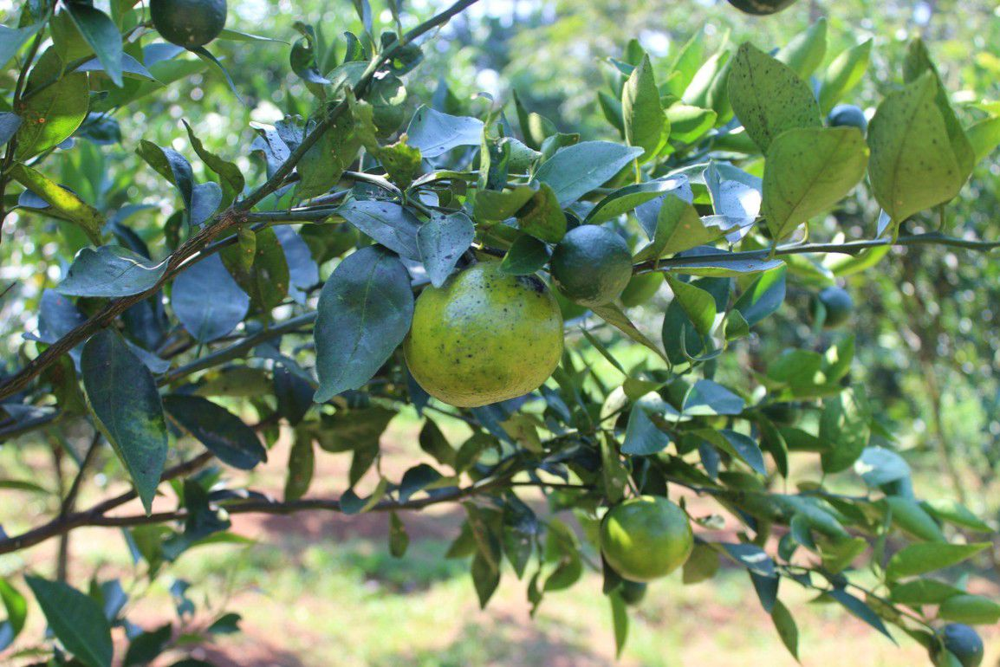
🍊 Kebun Jeruk — Manisnya Buah Kerja Keras
Di sela-sela pemukiman dan ladang warga, tumbuhlah pohon-pohon jeruk yang buahnya ranum dan manis rasanya. Warga merawatnya dengan sabar dari masa penanaman hingga buahnya siap dipetik. Jeruk ini menjadi simbol bahwa hasil yang manis butuh proses dan kesabaran yang panjang — tidak ada yang instan di dunia ini.
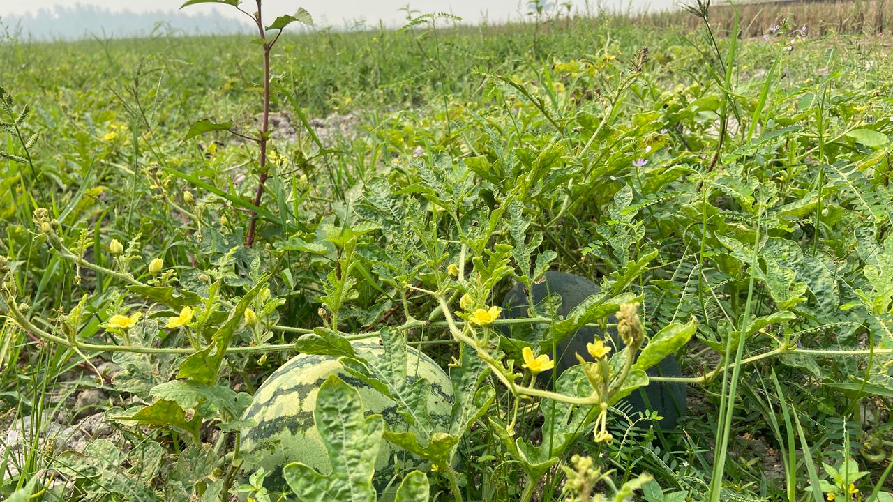
🍉 Kebun Semangka — Buah Segar Penuh Rezeki
Di lahan ladang yang terkena sinar matahari penuh, semangka tumbuh subur merambat di atas tanah. Tanaman ini cocok dibudidayakan di wilayah kami karena tanahnya berpasir dan tidak terlalu lembap. Warga merawatnya dengan sabar dari penyemaian hingga menjaga dari hama. Saat buah sudah besar dan matang, wajah petani pun tampak gembira menanti hasil yang manis dan menyegarkan. Buah ini tidak hanya dinikmati keluarga di rumah, tapi juga dijual ke pasar menjadi penghasilan tambahan yang lumayan. Semangka mengajarkan kami bahwa hasil yang manis butuh kesabaran dan perawatan yang tulus.
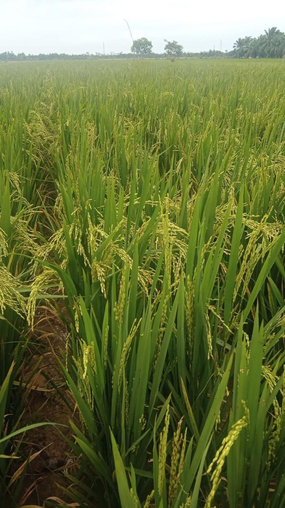
🌾 Padi yang Tumbuh Hijau — Simbol Harapan Para Petani
Lihatlah hamparan padi yang hijau dan segar di bawah sinar matahari pagi. Setiap helai daunnya menyimpan cerita perjuangan — dari pengolahan tanah, menanam, merawat, hingga menjaga dari hama. Kesabaran para petani diuji di sini setiap musimnya. Semoga tanah kami selalu subur, air kami selalu mengalir jernih, dan panen kami selalu diberkahi kebaikan yang berlimpah ruah setiap tahunnya.
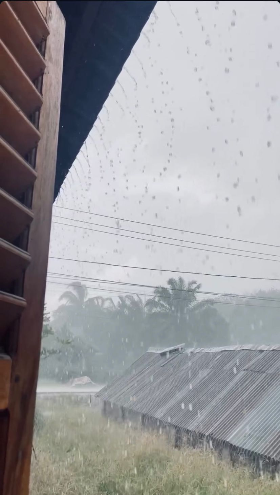
🌧️ Ketika Hujan Membasahi Tanah Kami — Anugerah yang Dinanti
Bagi orang kota hujan mungkin dianggap gangguan, tapi bagi kami di Sepinggan Gelik, hujan adalah tamu yang selalu dinanti kedatangannya. Saat langit mulai mendung dan rintik air turun membasahi bumi, tanah tersenyum, tanaman menyegarkan diri, dan sungai mulai penuh kembali. Hujan membawa kehidupan baru bagi sawah dan ladang kami.
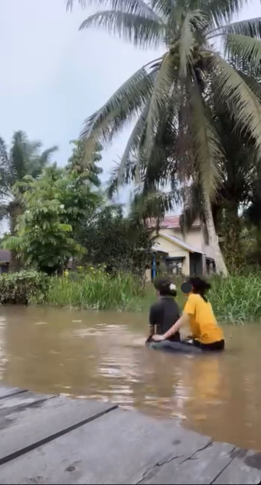
🌊 Sungai Kami — Tempat Bermain & Sumber Kehidupan
Aliran sungai yang jernih yang membelah wilayah dusun kami adalah saksi bisu pertumbuhan dan kehidupan warga dari masa ke masa. Dulu kakek-nenek kami mandi dan mengambil air di sini, kini anak-anak kami pun bermain dan tertawa riang di tepiannya. Sungai ini mengajarkan kami tentang ketulusan — memberi manfaat tanpa pamrih.
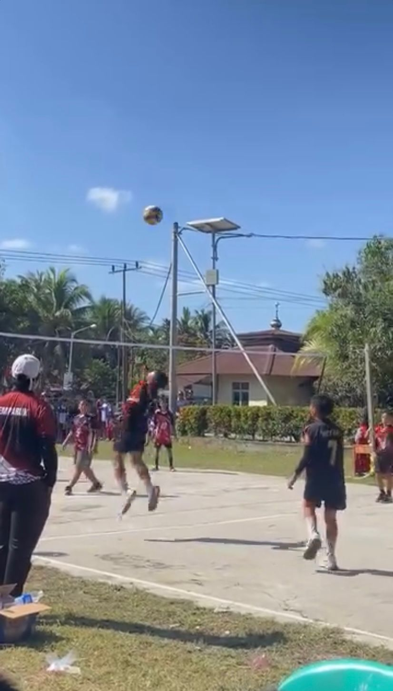
🏐 Semangat Pemuda di Lapangan — Sehat & Bersatu Lewat Olahraga
Di lapangan terbuka, anak-anak dan pemuda dusun berkumpul untuk bermain bola voli dengan penuh semangat. Bukan soal siapa yang menang atau kalah yang terpenting, melainkan semangat bergerak, menjaga kesehatan, dan belajar bekerja sama dalam satu tim. Semoga semangat sportivitas ini terus tumbuh di dada generasi muda Sepinggan Gelik.
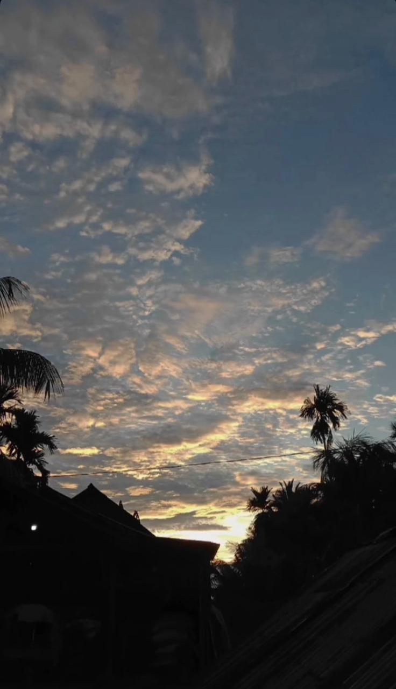
🌅 Senja di Sepinggan Gelik — Penutup Hari yang Indah
Saat matahari mulai turun ke peraduannya, langit di atas dusun kami berubah warna menjadi lukisan alam yang tiada duanya. Jingga keemasan bercampur ungu lembut memantul di permukaan sawah dan sungai, menciptakan suasana damai yang menenangkan setiap hati yang lelah bekerja seharian. Senja ini mengingatkan kita untuk bersyukur atas hari yang telah dilewati dengan selamat.
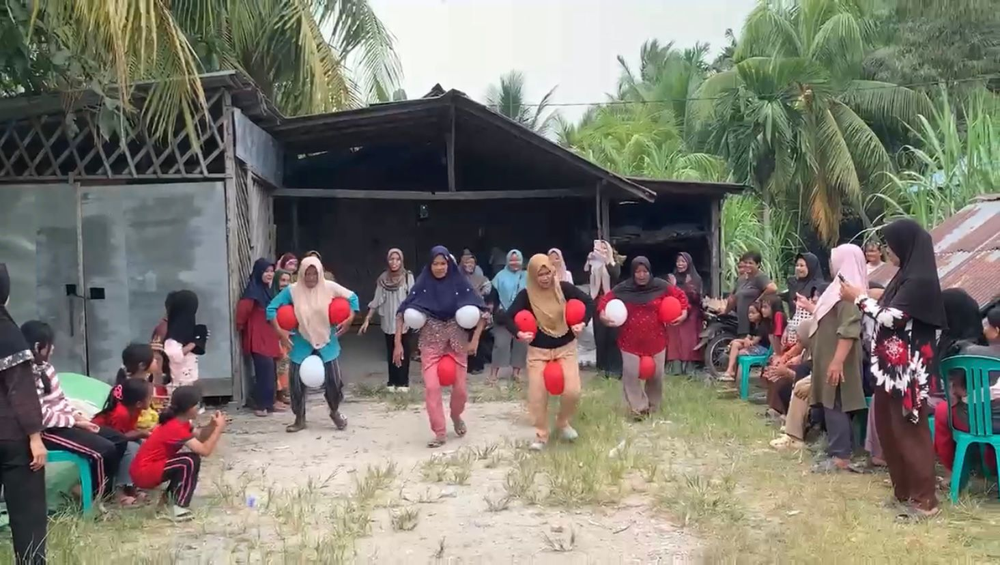
🎈 Keceriaan Ibu-ibu — Wajah Bahagia Sepinggan Gelik
Di sela-sela kesibukan mengurus rumah tangga dan keluarga, ibu-ibu warga juga menyempatkan diri berkumpul dan bersenang-senang bersama. Lomba balon ini menjadi momen yang penuh tawa dan keceriaan. Keceriaan ibu-ibu adalah cahaya yang menerangi rumah tangga kami — jika ibu bahagia, keluarga pun harmonis dan penuh kasih sayang.
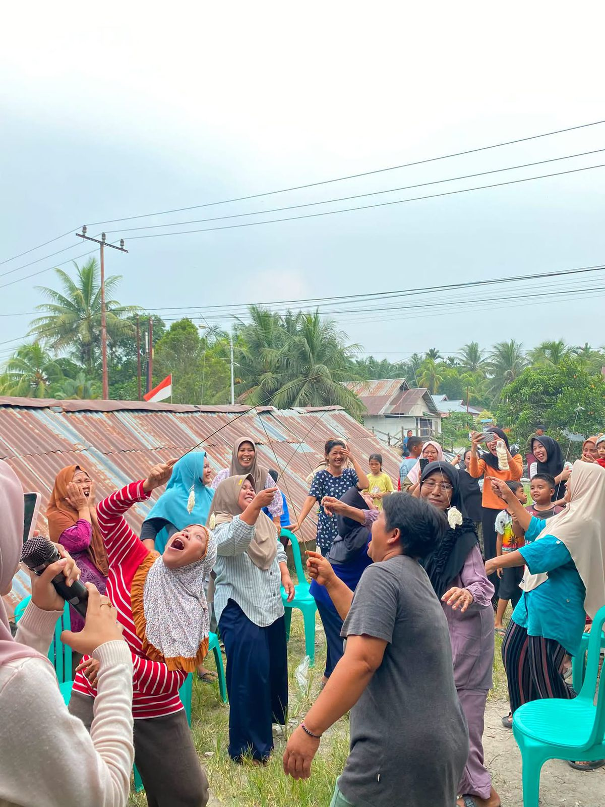
🍘 Lomba Tradisional — Warisan Seru yang Tak Pudar
Siapa yang tidak tersenyum melihat ibu-ibu berusaha menghabiskan kerupuk yang digantung tanpa menyentuhnya dengan tangan? Lucu, seru, dan penuh tawa — itulah inti dari lomba ini. Bukan untuk memperebutkan hadiah yang besar, melainkan untuk berkumpul, melepas lelah, dan mempererat persaudaraan antar tetangga yang tinggal berdampingan.
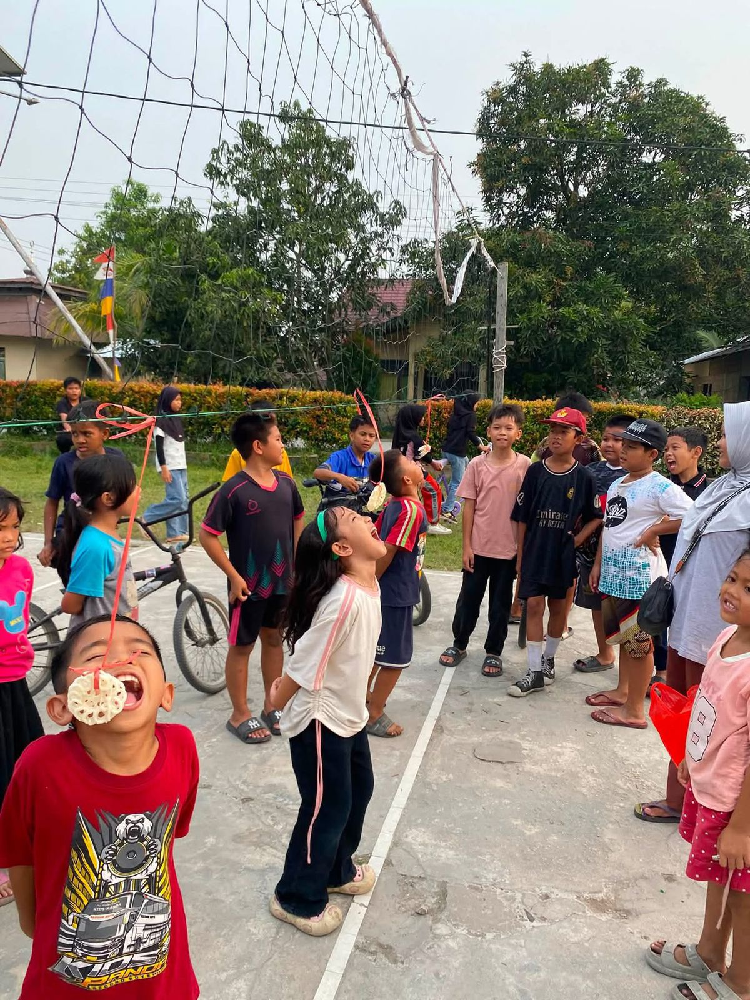
🍪 Keceriaan Anak-anak — Warna-warni Masa Kecil di Dusun
Saat giliran anak-anak yang maju ke garis start, suasana jadi makin seru dan menghibur. Wajah-wajah polos yang penuh semangat berusaha memakan kerupuk yang digantung ini selalu membuat semua orang tersenyum bahagia. Di momen inilah masa kecil mereka terukir indah dalam kenangan — penuh tawa, kebebasan, dan kebahagiaan sederhana yang tak bisa dibeli dengan apa pun.
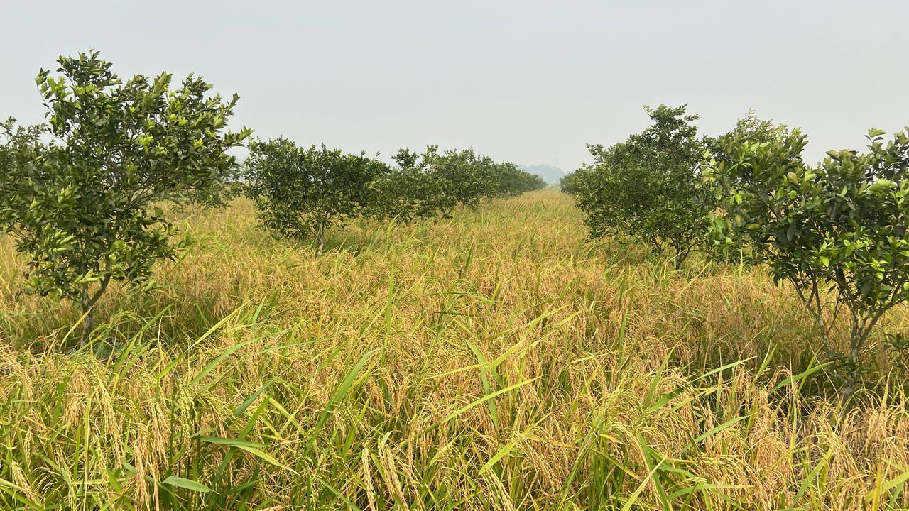
🌾 Padi Menguning — Tanda Bahagia yang Dinanti
Saat hamparan sawah yang tadinya hijau mulai berubah warna menjadi kuning keemasan di bawah sinar matahari, hati para petani pun ikut berseri-seri bahagia. Bulir padi yang penuh dan berat mengisyaratkan bahwa kerja keras dan penantian panjang akhirnya akan terbayar lunas. Ini adalah pemandangan paling membahagiakan di Sepinggan Gelik — tanda bahwa rezeki yang diberkahi sebentar lagi akan masuk ke lumbung keluarga kami.
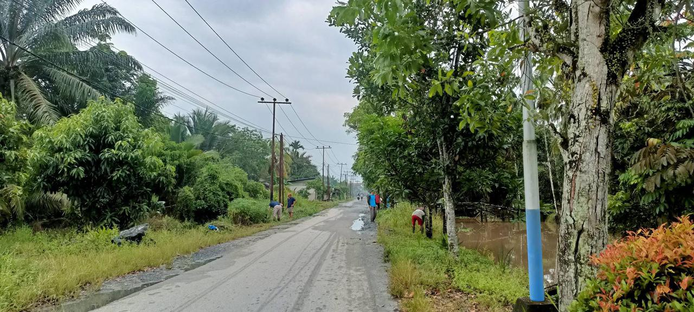
🤝 Gotong Royong — Jiwa Sejati Warga Sepinggan Gelik
Inilah kekuatan terbesar kami yang tak ternilai harganya: kebersamaan. Pria, wanita, tua, dan muda berkumpul di hari yang telah disepakati untuk membersihkan jalan dan tepian sungai. Tidak ada yang merasa lebih tinggi atau lebih rendah, semua bekerja sama dengan tulus hati. Gotong royong bukan sekadar kerja bakti fisik semata, melainkan perekat hati antarwarga yang membuat kita tetap satu keluarga besar.
📸 Foto-foto ini adalah kisah kami — sederhana namun tulus, kecil namun bermakna, dan kami bangga membagikannya kepada Anda semua.
Dusun Sepinggan Gelik mungkin bukan tempat yang terkenal di peta, bukan kota besar yang penuh gedung pencakar langit, dan bukan pula tempat wisata yang ramai dikunjungi orang dari jauh. Namun bagi kami yang lahir dan tumbuh besar di sini, ini adalah tempat paling indah di dunia.
Alamat Lengkap: Dusun Sepinggan Gelik, Desa Sepinggan, Kecamatan Semparuk, Kabupaten Sambas, Kalimantan Barat, Indonesia — Kode Pos 79453
Di sini tanah tempat kami berpijak subur, air yang kami minum jernih, udara yang kami hirup segar, dan tetangga yang kami temui setiap hari adalah saudara yang tulus menyayangi. Hidup kami sederhana, namun hati kami kaya dengan rasa syukur dan kebersamaan yang tak bisa dibeli dengan harta apa pun di dunia ini.
"Kami mungkin kecil di mata dunia, tapi kami besar di hati karena kami hidup rukun, bekerja keras, menjaga alam, dan mencintai sesama."
— Warga Dusun Sepinggan Gelik, Desa Sepinggan, Kecamatan Semparuk, Kabupaten Sambas, Kalimantan Barat
🏠 Alamat Lengkap:
Dusun Sepinggan Gelik, Desa Sepinggan, Kecamatan Semparuk, Kabupaten Sambas, Kalimantan Barat, Indonesia — Kode Pos 79453
📱 WhatsApp:
🔗 +62 856-9671-6520 — Klik langsung untuk chat
📧 Email:
🔗 sdevita510@gmail.com — Silakan kirim pesan atau saran
🕐 Jam Pelayanan: Senin–Jum'at, pukul 08.00–16.00 WIB
📍 Klik di sini untuk membuka Peta & Petunjuk Arah